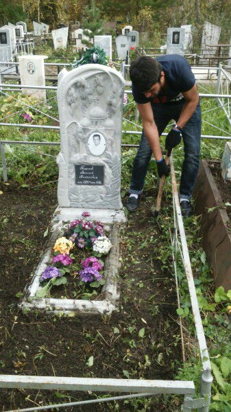
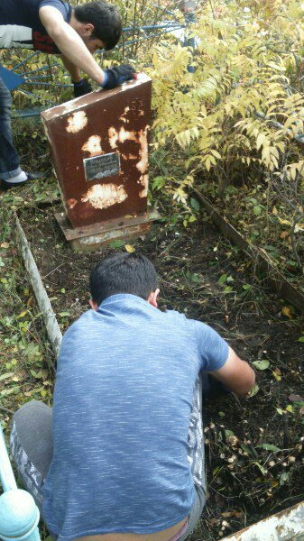
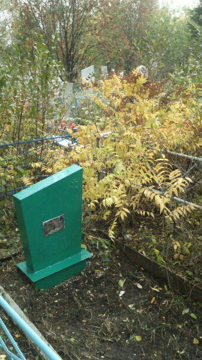
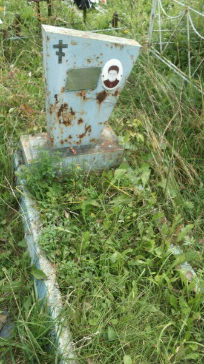
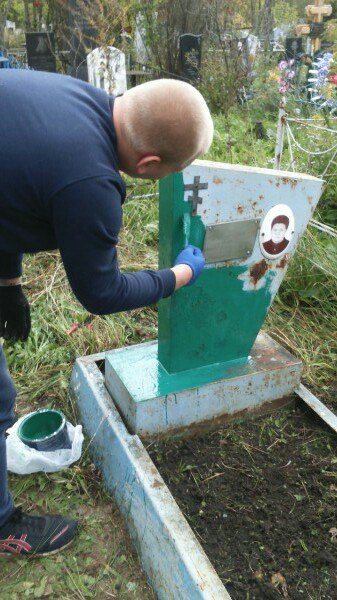
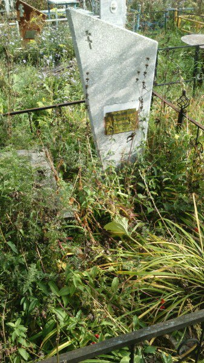
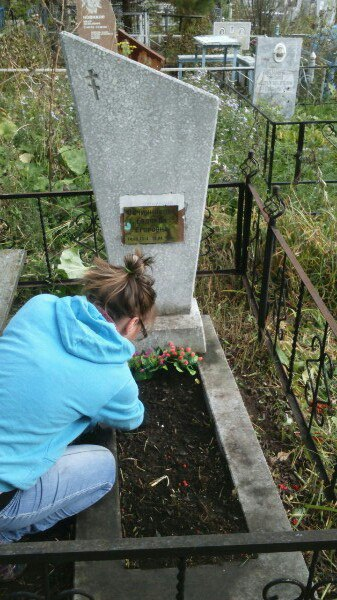
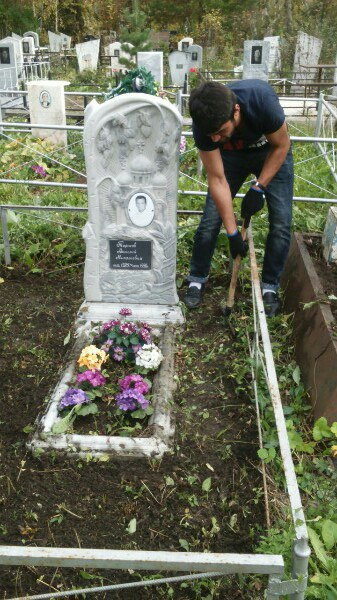
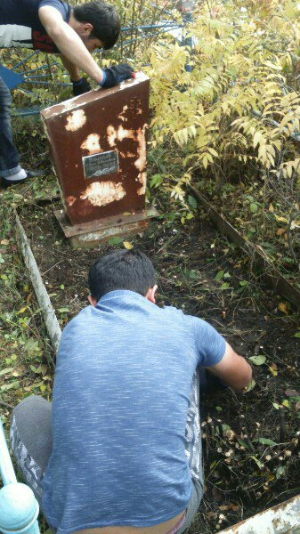
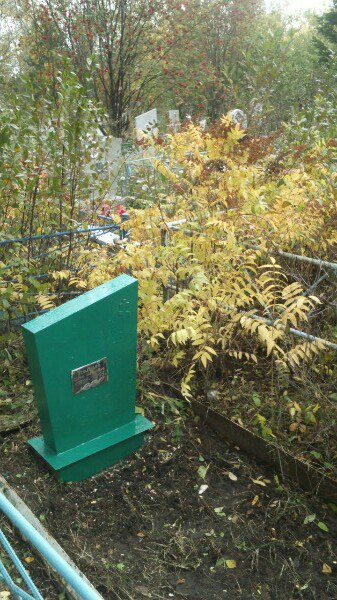
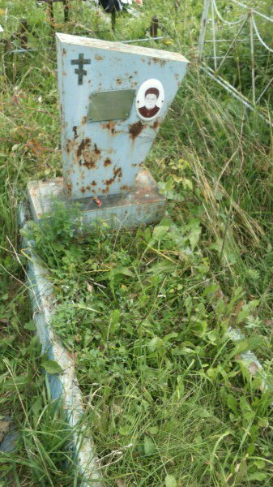
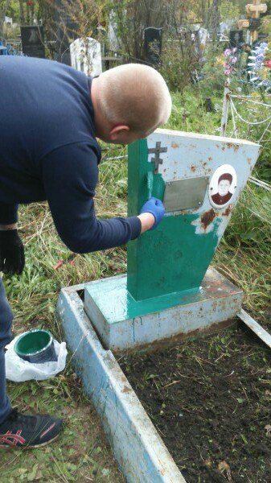
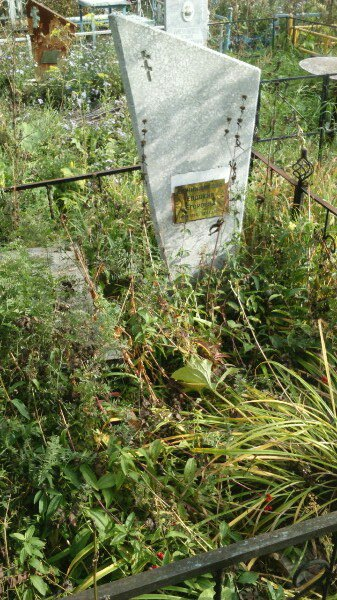
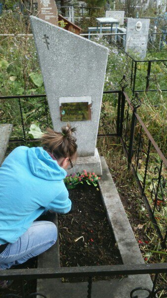
Артемьев Григорий Евгеньевич • 10.09.1909-20.05.1991 •
Луткова Александра Никоноровна • 21.04.1912-18.02.1996 •
Стефоиченко Николай Гаврилович • 15.05.1920-28.06.1991 •
Горуновский Борис Дмитриевич • 19.07.1914-27.03.1985 •
Савкин Евгений Терентьевич • 23.02.1913 -11.12.1984 •
Кириллова Мария Сергеевна • 20.05.1917-19.12.1995 •
Овчинников Василий Филиппович • 14.03.1928-9.10.1985 •
Запрягаева Клавдия Степановна • 15.11.1911-16.01.1990 •
Чекулаев Иван Тихонович • 20.06.1929-07.08.1993 •
Козлова Анна Михайловна • 15.09.1917-05.10.1992 •
Овчинникова Евдокия Егоровна • 14.09.1914-13.04.1995 •
Порошков Константин Васильевич • 23.09.1923-14.09.1995 •
Гаврилова Екатерина Федоровна • 15.06.1920-29.05.1995 •
Колятко Петр Григорьевич • 22.12.1928-08.10.1996 •
Усольцев Иван Иванович • 21.11.1922-11.06.1995 •
Рожденственская Евдокия Абрамовна • 03.04.1924-31.05.1996 •
Васильева Валентина Андреевна • 25.03.1918-21.11.1995 •
Пичужкин Сергей Васильевич • 23.09.1929-15.07.1997 •
Кивко Анна Ивановна • 19.01.1914-16.12.1995 •
Тарасов Василий Николаевич • 01.05.1925-20.09.1996 •
Игдисанов Борис Алексеевич • 16.10.1930-08.05.1993 •
Ракова Евдокия Фёдоровна • 12.06.1905-05.12.1995 •
Филин Григорий Павлович • 13.01.1929-22.04.2008 •
Мелехова Татьяна Семёновна • 10.01.1906-24.11.1993 •
Кузьмичев Евгений Львович • 13.01.1939-09.02.2010 •
Кузьмичева Алевтина Матвеевна • 14.01.1939-25.03.2010 •
Якимова Анастасия Ивановна • 26.05.1931-22.11.1993 •
Агафонова Фекла Ивановна • 14.10.1896-9.05.1993 •
Новиков Владимир Михайлович • 04.12.1939-29.05.2010 •
Халеев Юрий Герасимович • 25.12.1937-31.05.1993 •
Колмыков Егор Дмитриевич • 06.05.1929-08.02.1994 •
Гришковец Валентина Васильевна • 21.01.1911-30.11.1993 •
Уйманов Михаил Кесаревич • 29.11.1927-30.10.1993 •
Новиков Сергей Владимирович • 31.05.1967-06.01.2008 •
Тренихин Михаил Алексеевич • 11.10.1915-10.03.1995 •
Пугачев Григорий Серафимович • 16.11.1930-30.11.1994 •
Будакова Екатерина Георгиевна • 23.11.1914-15.08.1995 •
Синицкий Георгий Маркович • 11.04.1912-23.06.1993 •
Арзамасцев Дмитрий Никифорович • 25.10.1912-24.09.1995 •
Потапова Агафия Петровна • 28.12.1910-09.12.1992 •
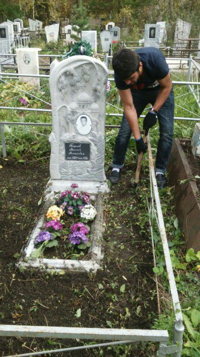
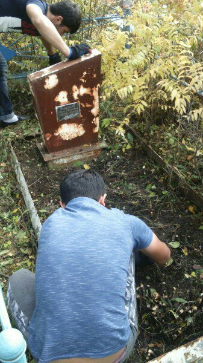
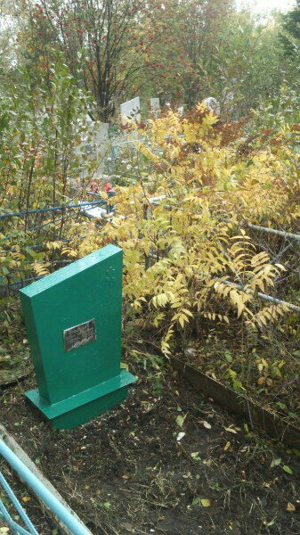
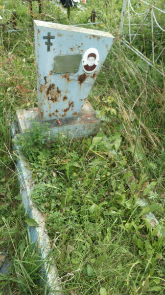
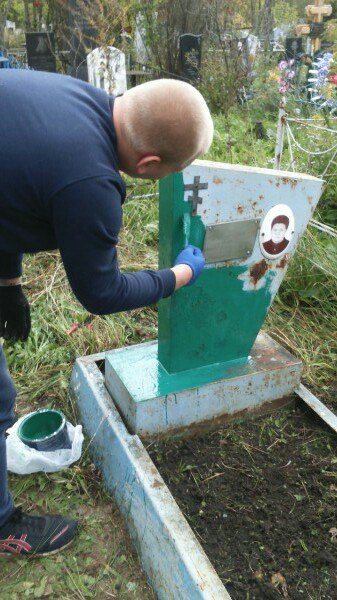
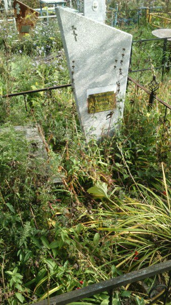
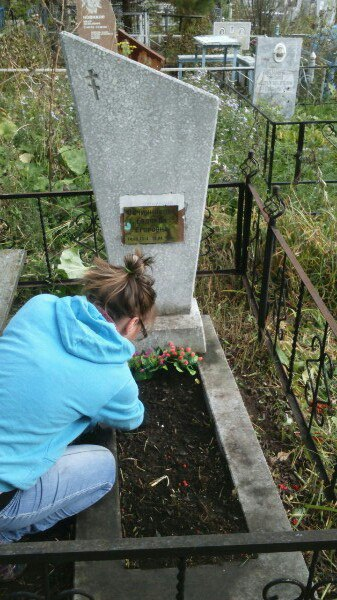
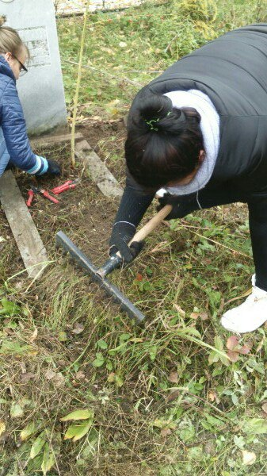